System Architecture Overview
This guide provides an exhaustive technical and conceptual breakdown of the 16 architectural diagrams generated for the Medical Representative Visit Prioritization and Route Optimization System. The visual models provide end-to-end multi-tier coverage:
Problem Context & Domain Challenges
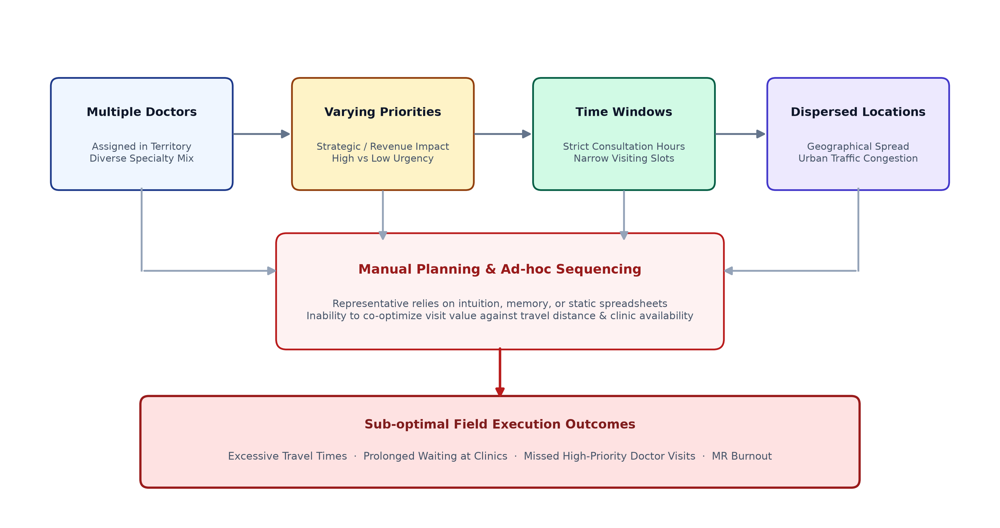
1. Conceptual Description
Medical representatives in commercial pharmaceutical distribution operate under highly constrained, multi-variable daily environments. Figure 1 structures the fundamental domain bottleneck into four distinct operational input factors that converge onto the traditional manual planning approach:
- Multiple Doctors: Each MR is assigned 100–150 doctors across diverse medical specialties (Cardiology, Orthopedics, Pediatrics, General Medicine, Oncology).
- Varying Priorities: Doctors possess vastly different prescription volumes, time since last visit, and commercial value. Some require weekly detailing; others only monthly.
- Strict Time Windows: Clinics maintain tight consultation hours (e.g., 09:30–11:30 AM or 05:00–07:00 PM). Visiting outside these narrow slots results in refusal of entry.
- Dispersed Locations: Doctor clinics are geographically scattered across congested urban traffic zones, creating unpredictable travel overheads.
2. Failure Mode of Manual Planning
When field representatives rely on intuition, manual notebooks, or static spreadsheets, they cannot mentally co-optimize combinatorial constraints:
The resulting outcome is sub-optimal field execution: excessive criss-cross transit, long waiting in clinic lobbies, missed Tier-1 doctor visits, and high representative fatigue and burnout.
Viva / Defense Speaking Points
- "Manual planning suffers from combinatorial explosion: with just 10 doctors, there are over 3.6 million possible permutations of visitation sequences."
- "Without algorithmically bounded time windows, MRs frequently arrive during closed hours, wasting productive field time."
Research Gap & End-to-End Integrated Framework
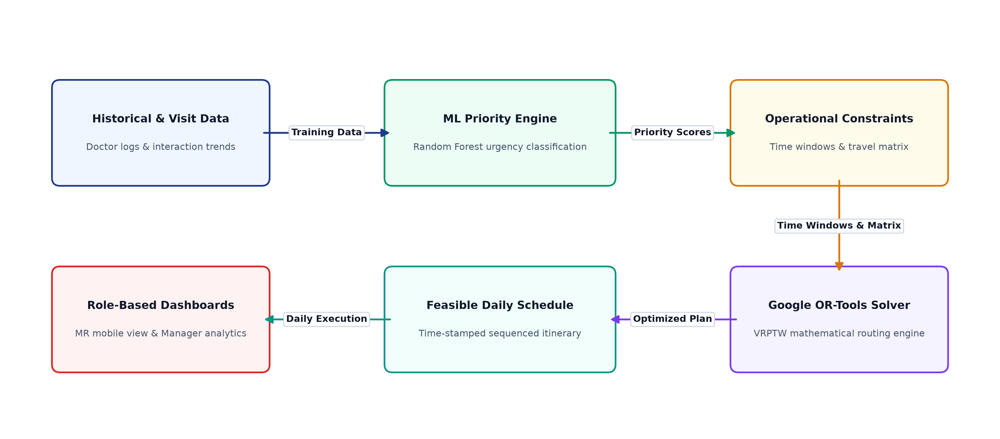
1. Conceptual Description
Figure 2 illustrates the core intellectual and engineering contribution of this project: bridging the gap between data-driven visit prioritization and spatial routing optimization into a continuous automated closed loop.
Traditional literature and enterprise CRM software treat prioritization and vehicle routing as separate silos: CRM systems rank doctors statically without spatial awareness, while GPS routing engines optimize shortest paths without clinical priority or time windows.
2. Integrated Workflow Steps
- Historical & Visit Data: Database stores past visit histories, detailing notes, days elapsed, and prescriber tiers.
- ML Priority Engine: Evaluates multidimensional features using a trained Random Forest model to assign calibrated urgency scores (0.00 to 1.00).
- Operational Constraints: Doctor availability time windows, MR working hours, and inter-clinic distance/duration matrices.
- Google OR-Tools Solver: A Vehicle Routing Problem with Time Windows (VRPTW) mathematical engine calculates the optimal visitation sequence that maximizes high-priority coverage while minimizing total distance and wait time.
- Feasible Daily Schedule: Produces a sequenced, turn-by-turn itinerary with exact arrival times and departure deadlines.
- Role-Based Dashboards: Displays interactive Leaflet maps and actionable checklists for MRs, and territory compliance analytics for Area Sales Managers.
Project Gantt Timeline
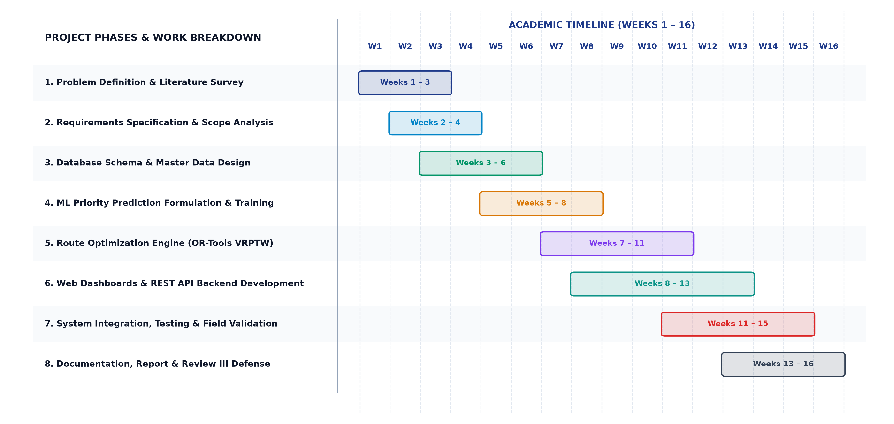
1. Conceptual Description
Figure 3 defines the 16-week academic project execution timeline across 8 structured milestones:
- Weeks 1–3: Problem Definition, Stakeholder Analysis & Comprehensive Literature Survey.
- Weeks 2–4: Software Requirements Specification (SRS) & Scope Freezing.
- Weeks 3–6: Relational Database Schema Design & Seed Data Generation.
- Weeks 5–8: Priority Model Formulation, Feature Engineering & Hyperparameter Tuning.
- Weeks 7–11: Google OR-Tools VRPTW Mathematical Formulation, Solver Integration & Heuristic Calibration.
- Weeks 8–13: Frontend React Dashboard (Vite, Leaflet, Responsive CSS) & FastAPI REST Endpoints.
- Weeks 11–15: End-to-End Pipeline Integration, Stress Testing & Urban Field Validation.
- Weeks 13–16: Technical Documentation, Final Report, Review III & Viva Defense.
Task Network & Dependency Architecture
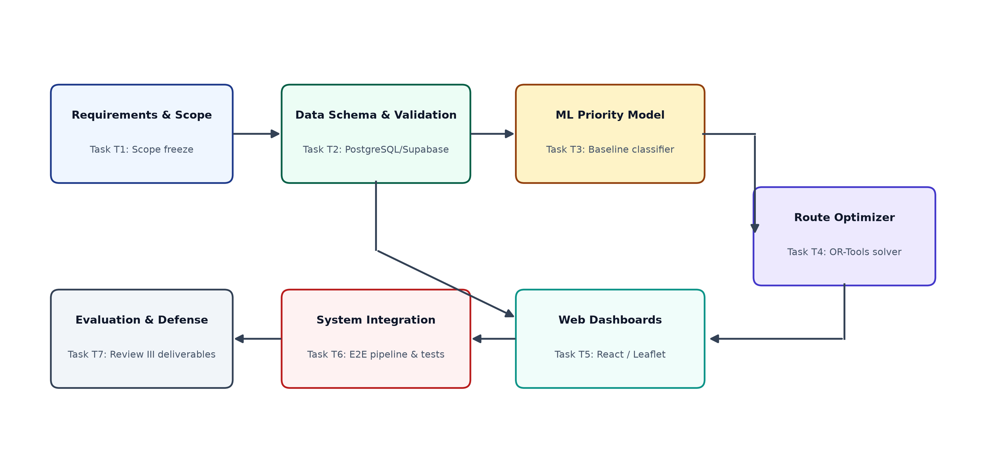
1. Conceptual Description
Figure 4 models the project's critical path and architectural dependencies through tasks T1 through T7:
- T1 (Requirements & Scope): Unlocks schema design and domain constraints.
- T2 (Data Schema & Validation): Serves as the dual foundation for both model training (T3) and UI wireframing (T5).
- T3 (Priority Model) & T4 (Route Optimizer): Form the intelligence pipeline, feeding solved mathematical itineraries directly into Web Dashboards (T5).
- T6 (System Integration & E2E Tests): Validates API payloads, JWT tokens, and solver convergence before final Review III evaluation (T7).
Software Development Life Cycle (SDLC) Model
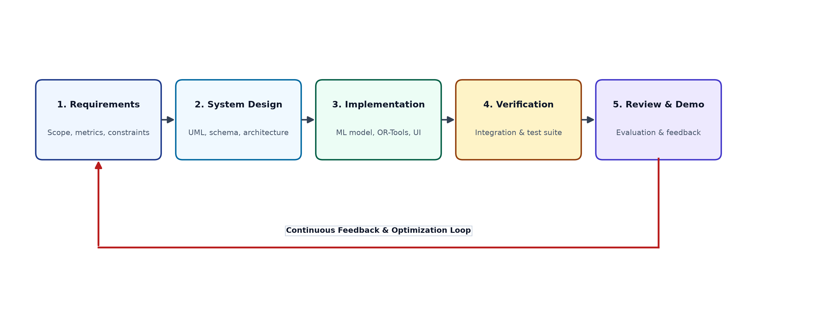
1. Conceptual Description
Figure 5 illustrates the Iterative Evolutionary Prototyping model adopted for this system:
- Requirements: Defining domain constraints (time windows, fuel limits, doctor availability).
- System Design: UML class/sequence diagrams, database normal forms, and REST contract schemas.
- Implementation: Python FastAPI backend, scikit-learn models, OR-Tools solver, and React SPA.
- Verification: Unit testing, solver feasibility boundary tests, and cross-validation of predictions.
- Review & Demo: Stakeholder review and feedback loop driving continuous algorithmic refinement.
4-Tier Enterprise System Architecture
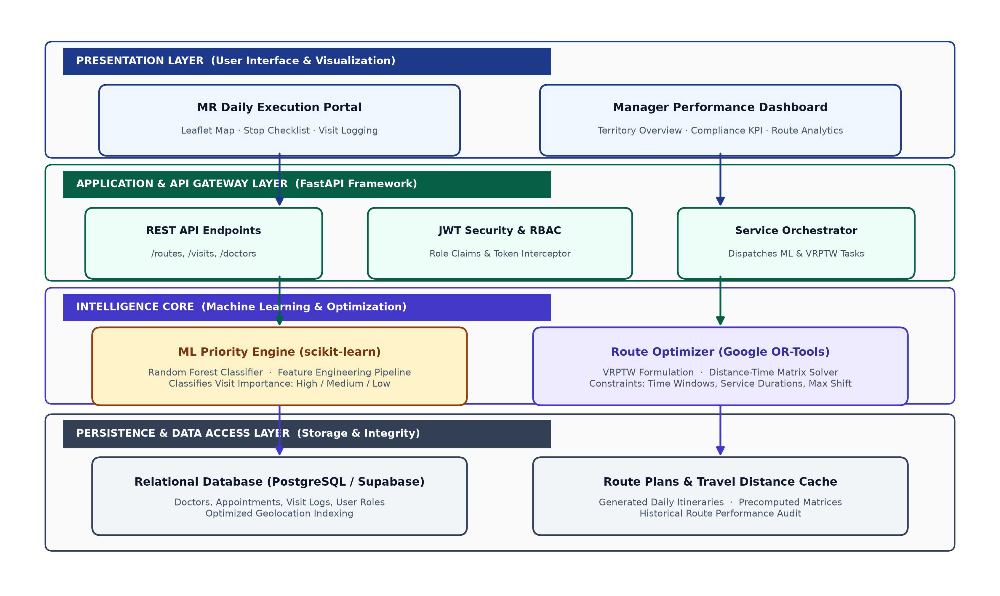
1. Conceptual Description
Figure 6 presents the enterprise-grade layered architecture of the deployed application, separating presentation from analytical compute:
┌────────────────────────────────────────────────────────────────────────┐
│ 1. PRESENTATION LAYER (React SPA / Leaflet Maps / Responsive UI) │
│ - MR Daily Execution Portal (Beat Checklist, Navigation, Logging) │
│ - Manager Performance Dashboard (Territory KPIs, Compliance) │
└────────────────────────────────────┬───────────────────────────────────┘
│ HTTPS / REST / JSON
┌────────────────────────────────────▼───────────────────────────────────┐
│ 2. APPLICATION & API GATEWAY LAYER (FastAPI Framework) │
│ - REST Endpoints (/routes, /visits, /doctors, /auth) │
│ - JWT Security & Role-Based Access Control (RBAC) │
│ - Service Orchestrator (Coordinates ML & Optimization Pipelines) │
└────────────────────────────────────┬───────────────────────────────────┘
│ Async Subsystem Dispatch
┌────────────────────────────────────▼───────────────────────────────────┐
│ 3. INTELLIGENCE CORE (Optimization & Machine Learning) │
│ - Priority Scoring Engine (Random Forest / Feature Transformer) │
│ - Route Optimizer (Google OR-Tools VRPTW Solver Engine) │
└────────────────────────────────────┬───────────────────────────────────┘
│ SQL Alchemy / AsyncPG
┌────────────────────────────────────▼───────────────────────────────────┐
│ 4. PERSISTENCE & DATA ACCESS LAYER (Supabase Cloud PostgreSQL 15+) │
│ - Relational Storage (Users, Doctors, Appointments, Route Stops) │
│ - Precomputed Distance-Time Matrices & Historical Audit Logs │
└────────────────────────────────────────────────────────────────────────┘
2. Architectural Separation of Concerns
- The Presentation Layer remains completely stateless, rendering interactive maps, stop sequences, and analytics.
- The Gateway Layer validates incoming payloads, handles JWT token validation, and manages role permissions.
- The Intelligence Core runs isolated from web server request-handling threads to prevent blocking during intensive mathematical matrix solving.
- The Persistence Layer maintains relational integrity with strict foreign keys and geolocation indices.
End-to-End Data Flow Pipeline
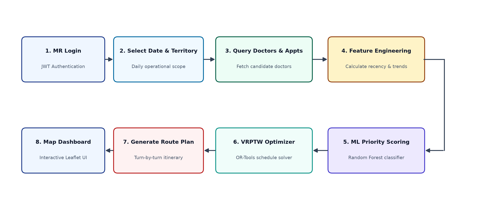
1. Sequential Pipeline Stages
Figure 7 traces the journey of a single user request from button press to map rendering:
- MR Login: JWT authentication validates field representative identity and territory scope.
- Select Date & Territory: Representative selects target date (e.g., today's beat).
- Query Doctors & Appointments: Backend retrieves candidate doctors and scheduled consultation windows.
- Feature Engineering: Computes dynamic features (recency, Rx_volume, conversion_rate, time_window).
- Priority Scoring: Evaluates vector inputs to produce urgency classifications (High, Medium, Low).
- VRPTW Optimizer: Passes prioritized doctors and travel times into Google OR-Tools.
- Generate Route Plan: Computes an ordered sequence of stops with optimal ETAs and minimal total transit.
- Map Dashboard: Returns JSON payload to React frontend, which renders markers, polyline routes, and stop timelines.
UML Use Case Diagram
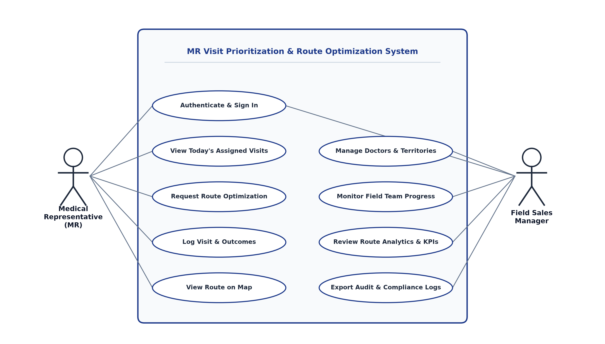
1. Primary Actors & System Boundaries
Medical Representative (MR):
- Authenticate & Sign In
- View Today's Assigned Visits
- Request Route Optimization
- View Route on Map & Timeline
- Log Visit Status (Pending → In-Progress → Completed / Rescheduled)
- Transmit WhatsApp En-Route ETA Notifications
Field Sales Manager:
- Authenticate & Sign In
- Manage Doctor Master Database & Territory Assignments
- Monitor Team Field Execution in Real Time
- Review Territory Analytics, Fuel Savings, and Compliance KPIs
- Export Audit Logs for Compliance Review
MR Field Activity Diagram
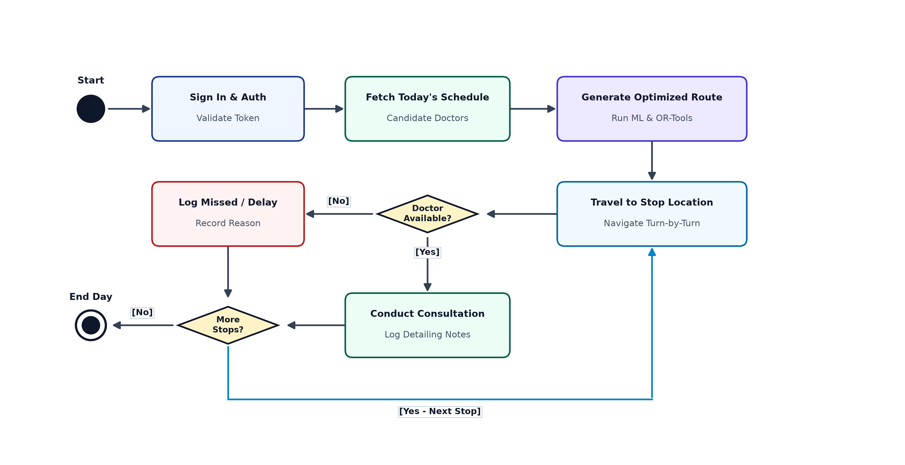
1. Workflow Logic & Decision Gates
Figure 9 tracks the field representative's physical execution loop:
- Start: Field rep authenticates via the web portal at 08:30 AM.
- Fetch Schedule: Inspects today's prioritized candidate list.
- Generate Optimized Route: Triggers the solver, which locks the sequence based on morning clinic slots.
- Travel to Stop Location: Follows turn-by-turn map coordinates to Doctor k.
- Decision Diamond (Doctor Available?):
- Yes: Representative conducts detailing session, hands over drug samples, and logs outcomes in the system.
- No (Emergency surgery / clinic closed): Representative marks stop as Missed/Delayed with justification note.
- Decision Diamond (More Stops in Daily Shift?):
- Yes: Moves immediately to next scheduled waypoint in sequence.
- No: Finishes daily beat route → triggers shift summary → End Day.
UML Sequence Diagram
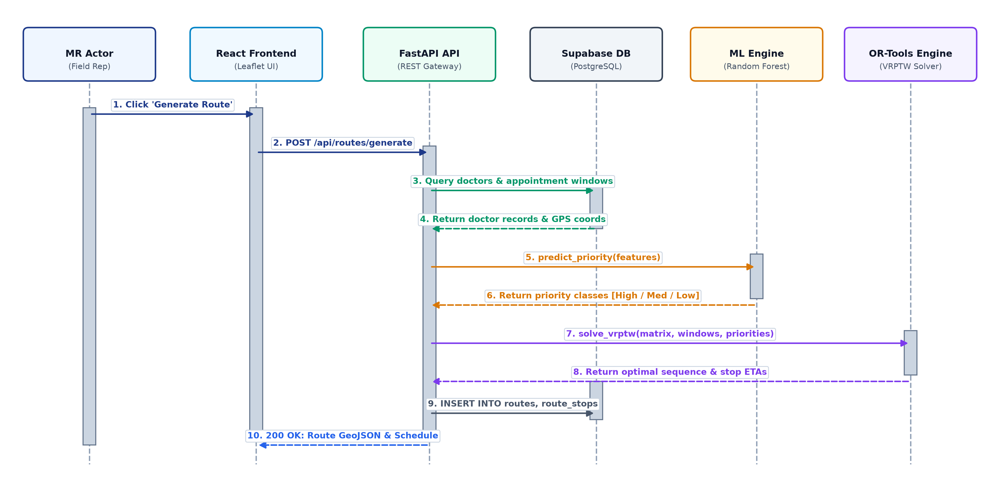
1. Inter-Component Communication Lifelines
Figure 10 formally models synchronous and asynchronous message exchanges:
MR Actorclicks Generate Route inReact Frontend.React FrontendsendsPOST /api/routes/generatewith JWT bearer token toFastAPI Gateway.FastAPI GatewayqueriesSupabase DBfor assigned doctor coordinates and appointment availability windows.Supabase DBreturns records toFastAPI Gateway.FastAPI Gatewaydispatches feature vectors toML Engineviapredict_priority(features).ML Enginereturns priority classifications (High, Medium, Low) with confidence scores.FastAPI Gatewaycallssolve_vrptw(matrix, windows, priorities)onOR-Tools Engine.OR-Tools Enginesolves the mathematical model and returns the optimal sequence with arrival timestamps.FastAPI GatewayexecutesINSERT INTO routes, route_stopsinSupabase DBto persist the itinerary.FastAPI GatewayreturnsHTTP 200 OKwith full GeoJSON polyline and stop schedule toReact Frontend.
UML Class Diagram
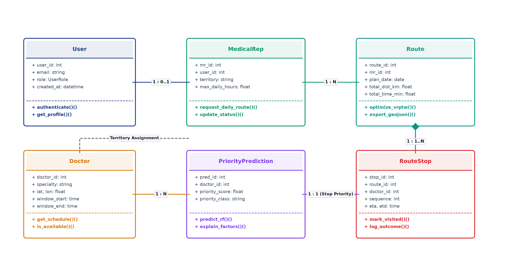
1. Domain Entities & Object Relationships
- User:
user_id,email,role(MR / Manager),created_at; methods:authenticate(),get_profile(). - MedicalRep:
mr_id,user_id(FK),territory,max_daily_hours; methods:request_daily_route(),update_status(). Cardinality with User is 1 : 0..1. - Doctor:
doctor_id,specialty,lat,lon,window_start,window_end; methods:get_schedule(),is_available(). - PriorityPrediction:
pred_id,doctor_id(FK),priority_score,priority_class; methods:predict(),explain_factors(). Cardinality with Doctor is 1 : N. - Route:
route_id,mr_id(FK),plan_date,total_dist_km,total_time_min; methods:optimize_vrptw(),export_geojson(). Cardinality with MedicalRep is 1 : N. - RouteStop:
stop_id,route_id(FK),doctor_id(FK),sequence,eta,etd; methods:mark_visited(),log_outcome(). Composition with Route (1 : 1..N) and association with PriorityPrediction (1 : 1).
Entity-Relationship (ER) Schema
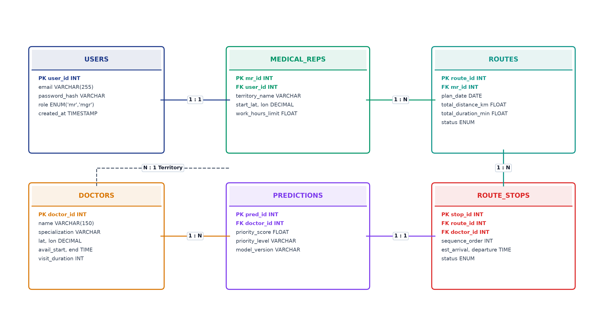
1. Relational Database Tables
- USERS: Primary key
user_id(INT),email(VARCHAR),password_hash(VARCHAR),role(ENUM: 'mr', 'mgr'),created_at(TIMESTAMP). - MEDICAL_REPS: Primary key
mr_id(INT), Foreign keyuser_id→USERS.user_id(1 : 1),territory_name,start_lat,start_lon,work_hours_limit. - DOCTORS: Primary key
doctor_id(INT),name,specialization,lat,lon(DECIMAL),avail_start,avail_end(TIME),visit_duration(INT). - PREDICTIONS: Primary key
pred_id(INT), Foreign keydoctor_id→DOCTORS.doctor_id(1 : N),priority_score(FLOAT),priority_level(VARCHAR),model_version. - ROUTES: Primary key
route_id(INT), Foreign keymr_id→MEDICAL_REPS.mr_id(1 : N),plan_date(DATE),total_distance_km(FLOAT),total_duration_min(FLOAT),status(ENUM). - ROUTE_STOPS: Primary key
stop_id(INT), Foreign keyroute_id→ROUTES.route_id(1 : N), Foreign keydoctor_id→DOCTORS.doctor_id,sequence_order(INT),est_arrival,departure(TIME),status(ENUM).
Route & Visit State Machine Diagram
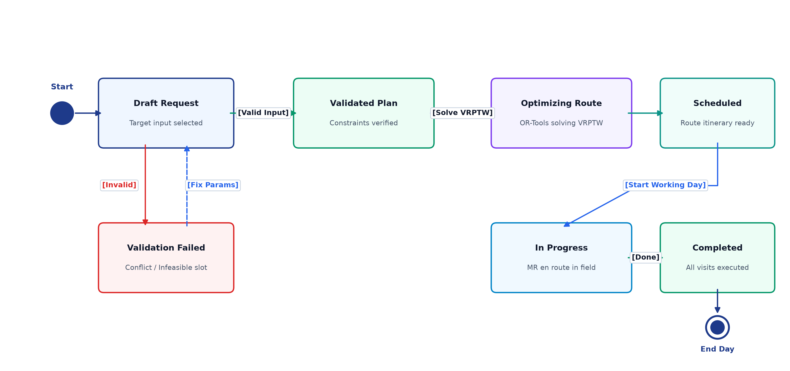
1. Lifecycle Transitions
Figure 13 governs state integrity throughout the planning and execution lifecycle:
- Draft Request: Initial parameter selection. If time windows conflict, transitions to Validation Failed → rep prompts parameter correction.
- Validated Plan: Input validated against operational boundaries → triggers solver.
- Optimizing Route: Active OR-Tools execution state.
- Scheduled: Optimal route generated, stored, and displayed on map.
- In Progress: Representative initiates field route; stops update dynamically.
- Completed: All scheduled appointments visited or resolved → shift summary locked.
Component Diagram
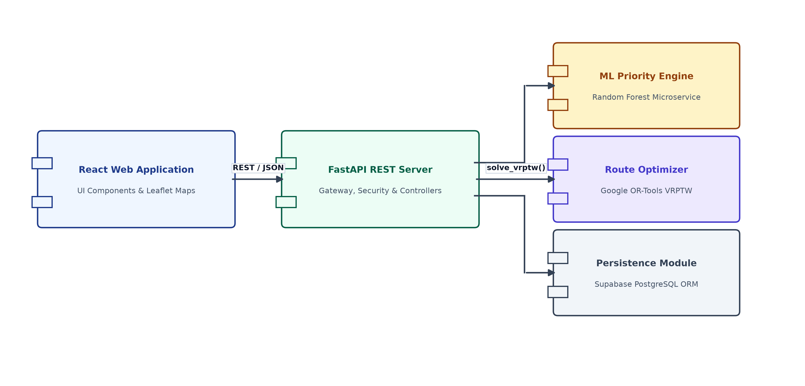
1. Micro-Component Decoupling
Figure 14 outlines clean separation between services:
- React Web Application: Handles UI presentation, state, and Leaflet map rendering.
- FastAPI REST Server: Acts as controller gateway, verifying tokens and marshaling payloads.
- Priority Scoring Engine: Microservice exposing feature extraction and classification interfaces.
- Route Optimizer: Standalone OR-Tools solver component invoked via clean API abstraction.
- Persistence Module: Supabase ORM layer managing transactional consistency.
Physical Deployment Diagram
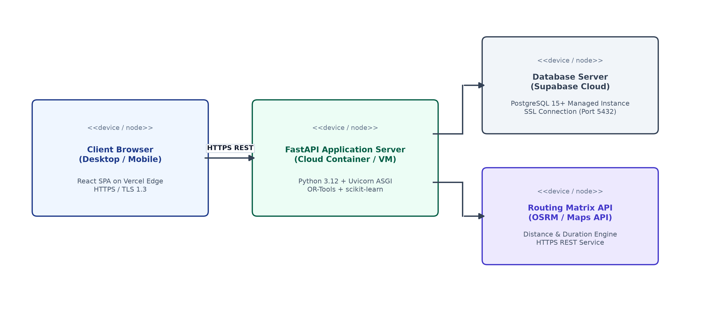
1. Production Topology
Figure 15 details the modern cloud deployment infrastructure:
- Client Browser Node (Desktop / Mobile): React SPA hosted on Vercel Edge with global CDN caching and HTTPS / TLS 1.3 encryption.
- FastAPI Application Server Node: Python 3.12 running inside a containerized Uvicorn ASGI instance on a cloud VM.
- Database Server Node: Managed PostgreSQL 15+ cluster hosted on Supabase Cloud via SSL Port 5432.
- Routing Matrix API Node: High-speed distance-duration matrix engine (OSRM / Maps Directions API) over HTTPS REST.
Feature & Scoring Pipeline
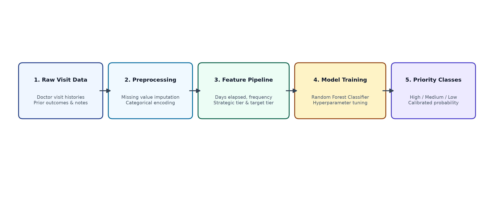
1. Data Transformation & Model Workflow
Figure 16 breaks down the step-by-step scoring engine:
- Raw Visit Data: Historical interaction logs, doctor visit dates, and detailing notes.
- Preprocessing: Handling missing values, standardizing dates, and one-hot encoding clinic specialties.
- Feature Pipeline: Generates 5 engineered metrics:
- Recency: Days since previous detailing session (35% weight).
- Rx Potential: Prescription volume tier (25% weight).
- Conversion Rate: Historical responsiveness ratio (15% weight).
- Time Window Fit: Feasibility of clinic consultation hours (15% weight).
- Specialty Alignment: Strategic fit with active drug campaigns (10% weight).
- Model Training: Random Forest classifier with 100 decision trees and 10-fold cross validation.
- Priority Classes: Emits calibrated probabilities mapped into three distinct operational tiers:
- High Priority: Probability > 0.70 (Mandatory inclusion in daily itinerary with high penalty factor if omitted).
- Medium Priority: Probability 0.40 – 0.70 (Secondary stops scheduled if time window and transit budget permit).
- Low Priority: Probability < 0.40 (Deferred to subsequent weekly beat cycles).